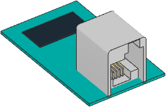

汎用I2Cデバイス
EV3とNXTは、汎用I2Cデバイスのハブへの接続をサポートしています。 こちらのピン配置 を参照してください。

- class I2CDevice(port, address, custom=False, power_pin=0, nxt_quirk=False)
汎用またはカスタムのI2Cデバイス。
注意:
power_pinオプションは自己責任で使用してください。不用意に ピンへ電源を供給すると、ハブやデバイスを損傷する可能性があります。 このオプションを使用する場合、リスクを理解したかどうかの確認が 求められます。- Parameters:
- await read(reg=None, length=1) bytes
- await read(reg=None, length=1, map=callable) Any
指定したレジスタからバイトを読み取ります。
- await write(reg=None, data=None)
バイトを書き込みます。オプションで指定したレジスタから書き込みを 開始できます。
- Parameters:
- Raises:
ValueError –
regが指定されていてdataが32バイトを超える 場合。より多くのデータを書き込むには、reg引数を省略し、dataの最初のバイトとしてレジスタを含めてください。
例: I2Cデバイスへの読み取りと書き込み
from pybricks.hubs import EV3Brick
from pybricks.iodevices import I2CDevice
from pybricks.parameters import Port
# Initialize the EV3
ev3 = EV3Brick()
# Initialize I2C Sensor
device = I2CDevice(Port.S2, 0xD2 >> 1)
# Read one byte from the device.
# For this device, we can read the Who Am I
# register (0x0F) for the expected value: 211.
if 211 not in device.read(0x0F):
raise ValueError("Unexpected I2C device ID")
# To write data, create a bytes object of one
# or more bytes. For example:
# data = bytes((1, 2, 3))
# Write one byte (value 0x08) to register 0x22
device.write(0x22, bytes((0x08,)))
I2Cアドレス
I2Cアドレスは7ビットの値です。ただし、LEGO互換センサーを製造する
ほとんどのベンダーは、ドキュメントで8ビットのアドレスを提供しています。
これらのアドレスを使用するには、1ビットシフトする必要があります。
たとえば、記載されているアドレスが 0xD2 の場合は、
address = 0xD2 >> 1 とできます。
高度なI2Cコマンド
一部の基本的なI2Cデバイスは、レジスタ引数やデータを必要としません。 以下の例に示すように、この動作を実現できます。
例: 高度なI2C読み取りと書き込みのテクニック
from pybricks.hubs import EV3Brick
from pybricks.iodevices import I2CDevice
from pybricks.parameters import Port
# Initialize the EV3
ev3 = EV3Brick()
# Initialize I2C Sensor
device = I2CDevice(Port.S2, 0xD2 >> 1)
# Recommended for reading
result = device.read(reg=0x0F, length=1)
# Read 1 byte from no particular register:
device.read(reg=None, length=1)
# Read 0 bytes from no particular register:
device.read(reg=None, length=0)
# I2C write operations consist of a register byte followed
# by a series of data bytes. Depending on your device, you
# can choose to skip the register or data as follows:
# Recommended for writing:
device.write(reg=0x22, data=b"\x08")
# Write 1 byte to no particular register:
device.write(reg=None, data=b"\x08")
# Write 0 bytes to a particular register:
device.write(reg=0x08, data=None)
# Write 0 bytes to no particular register:
device.write(reg=None, data=None)
追加の技術リソース
I2CDevice クラスのメソッドは、Linux SMBusドライバーの関数を
呼び出します。内部でどのコマンドが呼び出されているかを確認するには、
Pybricks source code をチェックしてください。
MicroPythonを使用せずにI2Cを使用する詳細については、 ev3dev I2C の
ページを参照してください。